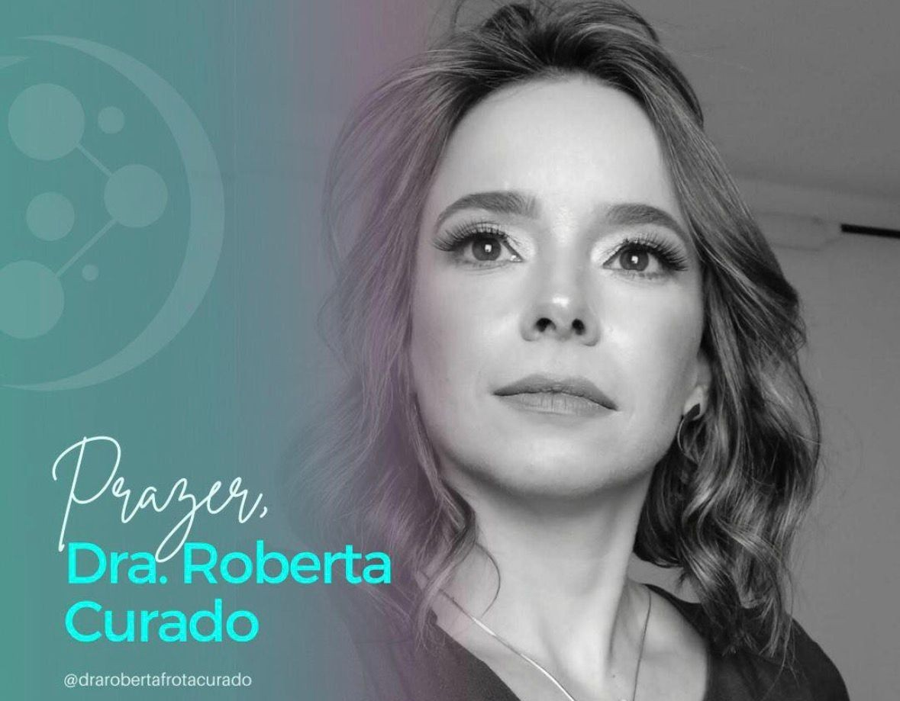

Dra. Roberta Curado
- Doutora em Ciências da Saúde pela Faculdade de Medicina - UFG;
- Mestre em Ciências da Saúde e Especialista em Biomedicina Estética;
- Especialista em Ozonioterapia para Alta Performance e Doenças Metabólicas.
- Docente em Instituições de Ensino Superior e Mentoria;
- Proprietária da clínica Dra. Roberta Curado Biomedicina Integrativa;
- Criadora do Projeto Ozônio Social - Terapia da Dor Crônica;
